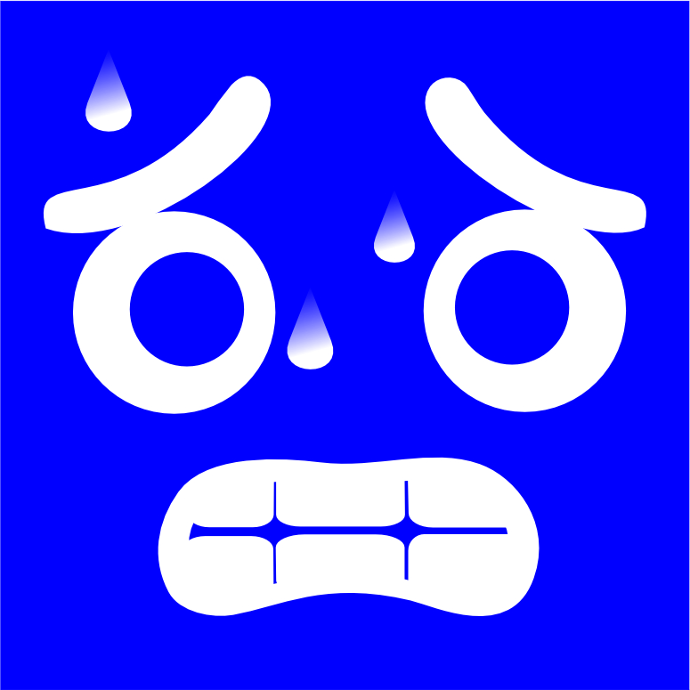

Um jogo de dedução social, blefe e fome.
Você acorda trancafiado no salão principal de um restaurante que um dia já foi luxuoso, mas agora tem as portas seladas de forma impenetrável. Você não está sozinho. Ao redor da mesa, outras pessoas se olham com a mesma expressão de pânico.
Não há como fugir, e a regra de sobrevivência imposta pelos seus captores é simples: quem ficar sem comer, morre de fome.
Todos os dias, misteriosamente, pratos de comida são colocados nas mesas. O problema é que a comida não é suficiente para manter todos vivos a longo prazo. Pior ainda: no escuro da noite, enquanto a maioria tenta dormir, criaturas e ameaças se esgueiram pelo restaurante para devorar a comida dos outros.
Para sobreviver, o grupo precisa conversar durante o dia, descobrir quem está roubando a comida à noite e expulsar os parasitas do restaurante antes que o último prato fique vazio. Em quem você confia quando a fome aperta?
O coração do jogo é a gestão de recursos. Diferente de outros jogos de dedução, não há assassinatos diretos noturnos na maioria dos casos; os jogadores morrem por inanição.
Se a vida de um jogador chegar a 0, ele morre de inanição. Além disso, todos os dias ocorre o Tribunal. Os jogadores debatem e votam em alguém para ser expulso do restaurante. Aquele que receber a maioria dos votos é eliminado imediatamente, independentemente do seu HP.
Objetivo: Eliminar os Convidados ou igualar o número de sobreviventes na mesa.
Objetivo: Deduzir e expulsar todas as Ameaças antes de morrerem de fome.

Objetivo: Sobreviver até o final da partida ou ser o único sobrevivente da explosão.